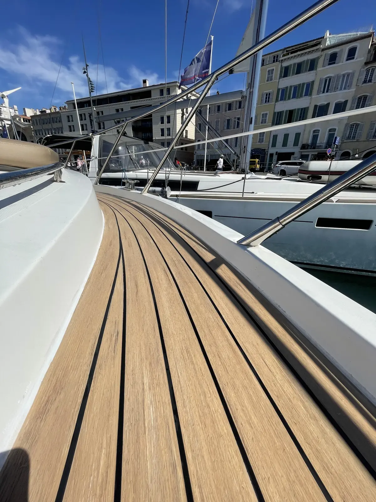

Pose de teck synthétique sur yacht et bateau
Un pont impeccable, sans les contraintes du teck naturel. Prestige Nautic installe le teck synthétique avec le soin d'un artisan, sur toute la Côte d'Azur.
Le teck synthétique, qu'est-ce que c'est ?
Le teck synthétique est un matériau composite conçu pour reproduire l'aspect et le confort du teck naturel, sans ses contraintes d'entretien. Fabriqué à partir de PVC ou de résines techniques, il est insensible à l'eau de mer, aux UV et aux variations de température — des conditions que tout bateau de Méditerranée doit endurer.
Posé collé sur le pont, il offre un rendu visuel haut de gamme, une surface antidérapante et une longévité nettement supérieure au teck naturel. C'est aujourd'hui le choix privilégié des propriétaires de yachts qui veulent un pont irréprochable sans immobiliser leur bateau en chantier chaque saison.
Résistant à l'eau de mer, aux UV et aux chocs. Conçu pour durer plus de 15 ans en conditions méditerranéennes.
Pas de traitement annuel, pas de ponçage. Un nettoyage classique suffit à conserver l'aspect d'origine.
Large palette de teintes de teck et de couleurs de joint. Configurez votre combinaison pour un rendu unique.
Surface striée offrant une adhérence optimale, même mouillée. Sécurité renforcée pour l'équipage et les passagers.
Visualisez votre pont avant de vous décider
Testez les combinaisons teck / joint en temps réel, directement sur l'image de votre type de bateau.
Du devis à la livraison
Une intervention structurée, sans mauvaise surprise. Chaque chantier suit les mêmes étapes pour garantir un résultat à la hauteur de vos attentes.
Prise du gabarit & étude du pont
Prise de côtes minutieuse, chaque élément du pont est pris en compte avant toutes poses
Conception sur mesure en atelier
Le teck synthétique est confectionné précisément pour votre bateau. Aucun produit générique : tout est fait sur mesure pour s'ajuster parfaitement à vos lignes.
Préparation et collage du pont
Dépose du teck (si nécessaire), remise à plat du pont, ponçage, dégraissage, puis collage avec colle marine bi-composant. La pose est réalisée en une seule passe pour éviter les reprises, les décalages et les bulles.
Jointoyage & finitions
Injection du joint polyuréthane dans la couleur choisie, ponçage léger des arrêtes et angles. Le résultat est net, sans surplus ni bulles.
Contrôle qualité & livraison
Vérification de l'alignement, de la planéité et de l'étanchéité sur chaque zone. Le bateau est rendu propre, prêt à naviguer.
Tout savoir sur le teck synthétique
Le teck synthétique glisse-t-il quand le pont est mouillé ?
Non. La surface est striée et conçue pour rester antidérapante, même mouillée — souvent plus sûre que le teck naturel verni. C'est un vrai atout de sécurité pour l'équipage comme pour les passagers.
Quelle est la durée de vie d'un pont en teck synthétique ?
En conditions méditerranéennes (UV, sel, chaleur), un teck synthétique de qualité posé dans les règles dépasse facilement 15 ans, sans le grisaillement ni les fissures du bois naturel.
Quel entretien faut-il prévoir ?
Quasiment aucun : pas de ponçage, pas d'huile ni de traitement annuel. Un simple nettoyage à l'eau savonneuse suffit à conserver l'aspect d'origine. C'est la principale raison du choix du synthétique. À l'inverse, le teck naturel demande un entretien régulier : voir notre guide d'entretien du teck.
Combien coûte la pose de teck synthétique sur un bateau ?
Le tarif démarre à partir de 580 € du m², pose et finitions comprises. Ce prix varie selon la surface à couvrir, la complexité du pont (hublots, taquets, marches, découpes) et la gamme de produit choisie. Un chantier simple sur un voilier de série sans teck sera moins coûteux que sur un bateau avec du teck à déposer. Chaque projet étant unique, nous établissons un devis gratuit après étude de votre bateau.
Teck synthétique ou teck naturel : que choisir ?
Le synthétique privilégie la durabilité et l'absence d'entretien ; le teck naturel offre un cachet authentique mais demande un entretien régulier. Pour trancher, lisez notre guide teck synthétique ou naturel ou comparez avec la pose de teck naturel.
Intervenez-vous sur mon port ?
Basés à Toulon, nous intervenons sur toute la Côte d'Azur : Hyères, Bandol, Sanary, Marseille, Saint-Tropez, Cannes, Antibes, Nice et Monaco. Nous possédons également une antenne dans le nord de la France.